Sample background points
sample_background.RdSampling background points with the possibility of using different geographical restrictions and sampling method.
sample_background( data, x, y, n, method = "random", rlayer, maskval = NULL, calibarea = NULL, rbias = NULL )
Arguments
| data | data.frame or tibble. Database with presences records, and coordinates |
|---|---|
| x | character. Column name with longitude data |
| y | character. Column name with latitude data |
| n | integer. Number of background point to be sampled |
| method | character. Background allocation method. The methods implemented are:
Usage method='thickening' or method = c("thickening", width = 20000). Default 'random' |
| rlayer | SpatRaster used for sampling background points. It is recommended to use a layer with the same resolution and extent that environmental variables that will be used for modeling. In the case use maskval argument, this raster layer must contain the values to sampling constraint |
| maskval | integer or numeric. Values of the raster layer used for constraining the background points sampling |
| calibarea | SpatVect that delimits the calibration area used for a given species (see calib_area function). |
| rbias | SpatRaster used for bias background points. When use 'biased' method must be provided the raster with with bias data. It is recommended that rbias match resolution and extent of rlayer. |
Value
A tibble object with x y coordinates of sampled background points
References
Vollering, J., Halvorsen, R., Auestad, I., & Rydgren, K. (2019). Bunching up the background betters bias in species distribution models. Ecography, 42(10), 1717-1727. https://doi.org/10.1111/ecog.04503
See also
Examples
# \dontrun{ require(dplyr) data(spp) somevar <- system.file("external/somevar.tif", package = "flexsdm") somevar <- terra::rast(somevar) # Lest practice with a single species spp_pa <- spp %>% dplyr::filter(species == "sp3") # part <- part_sblock( env_layer = somevar, data = spp_pa, x = "x", y = "y", pr_ab = "pr_ab", min_res_mult = 100, max_res_mult = 500, num_grids = 10, n_part = 2 )#>#> #>#>#>## %######################################################%## # # #### Random background method #### # # ## %######################################################%## # Sample background points throughout study area with random method spp_p <- spp_pa %>% dplyr::filter(pr_ab == 1) bg <- sample_background( data = spp_p, x = "x", y = "y", n = 1000, method = "random", rlayer = grid_env ) plot(grid_env)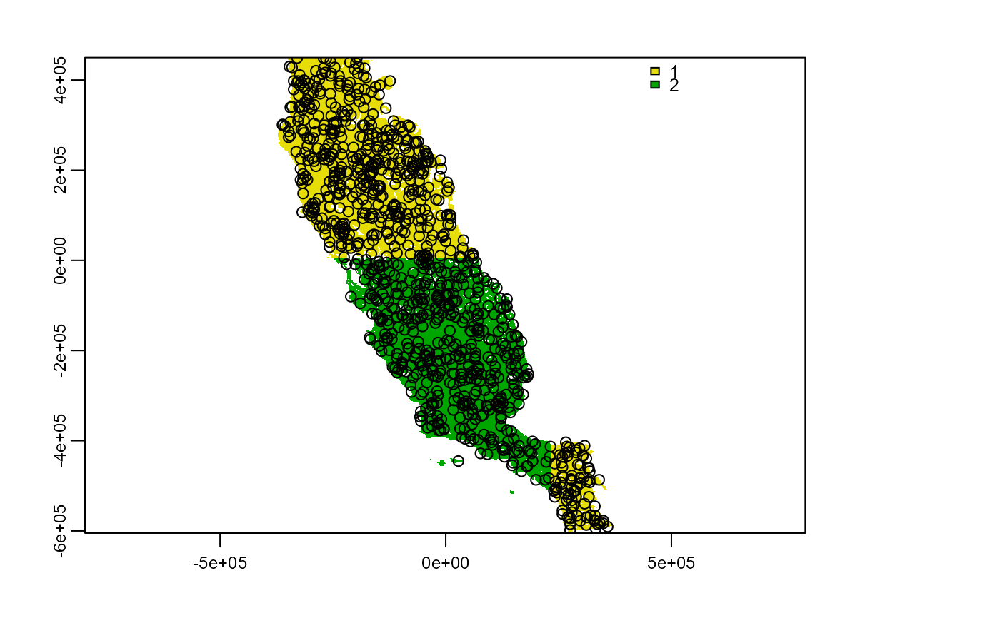sample_background( data = spp_p, x = "x", y = "y", n = 1000, method = "random", rlayer = grid_env, maskval = 1 ) %>% points()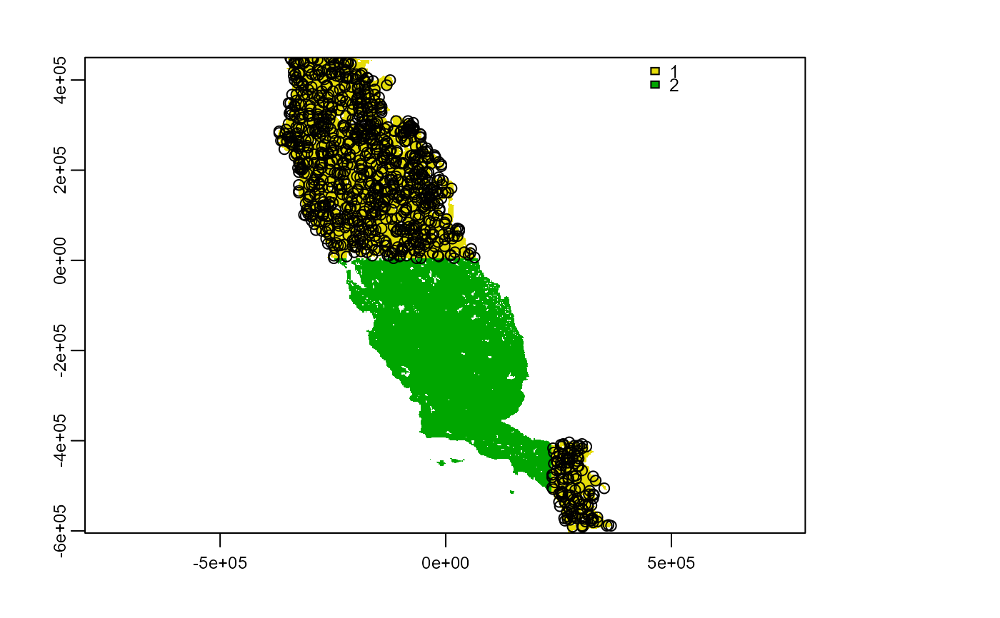sample_background( data = spp_p, x = "x", y = "y", n = 1000, method = "random", rlayer = grid_env, maskval = 2 ) %>% points()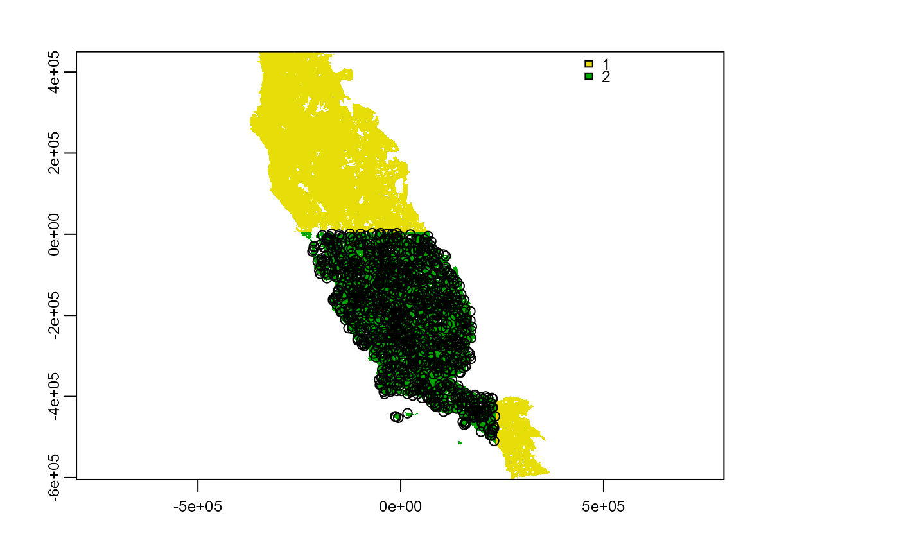sample_background( data = spp_p, x = "x", y = "y", n = 1000, method = "random", rlayer = grid_env, maskval = c(1, 2) ) %>% points()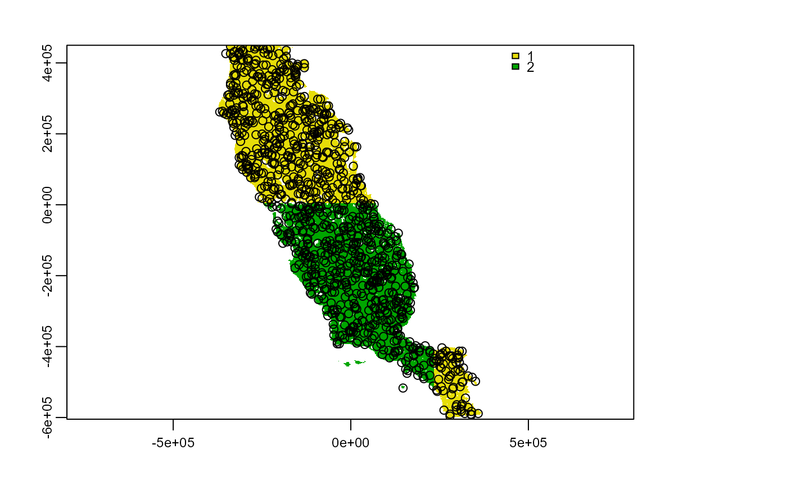# Sample random background within a calibration area and constrained to a region ca_ps1 <- calib_area( data = spp_pa, x = "x", y = "y", method = c("buffer", width = 50000), ) plot(grid_env)sample_background( data = spp_p, x = "x", y = "y", n = 1000, method = "random", rlayer = grid_env, maskval = 1, calibarea = ca_ps1 ) %>% points(col = "red")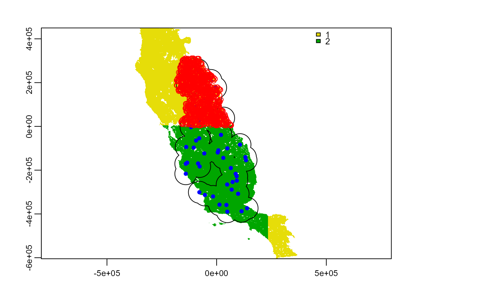## %######################################################%## # # #### Thickening background method #### # # ## %######################################################%## # Thickening background without containing them spp_p # presences database of a species#> # A tibble: 13 x 4 #> species x y pr_ab #> <chr> <dbl> <dbl> <dbl> #> 1 sp3 -26331. 209912. 1 #> 2 sp3 -134331. 195332. 1 #> 3 sp3 131079. -140548. 1 #> 4 sp3 -27411. 124322. 1 #> 5 sp3 106509. -83308. 1 #> 6 sp3 -86811. 259052. 1 #> 7 sp3 134049. -154588. 1 #> 8 sp3 -124881. 263372. 1 #> 9 sp3 -71151. 213152. 1 #> 10 sp3 2289. 9572. 1 #> 11 sp3 31989. 37922. 1 #> 12 sp3 -49551. 214232. 1 #> 13 sp3 -4461. 176702. 1grid_env # The raster layer used for sampling background#> class : SpatRaster #> dimensions : 558, 394, 1 (nrow, ncol, nlyr) #> resolution : 1890, 1890 (x, y) #> extent : -373685.8, 370974.2, -604813.3, 449806.7 (xmin, xmax, ymin, ymax) #> coord. ref. : +proj=aea +lat_0=0 +lon_0=-120 +lat_1=34 +lat_2=40.5 +x_0=0 +y_0=-4000000 +datum=NAD83 +units=m +no_defs #> source : memory #> name : .part #> min value : 1 #> max value : 2bg <- sample_background( data = spp_p, x = "x", y = "y", n = 5000, method = "thickening", rlayer = grid_env, ) plot(grid_env)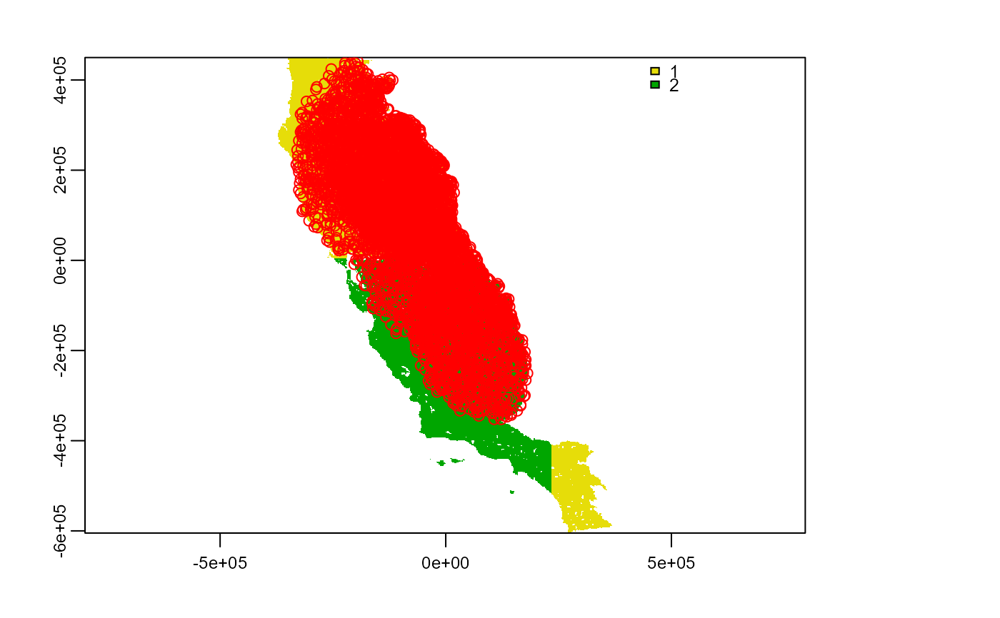# Thickening background without using a given buffer width spp_p # presences database of a species#> # A tibble: 13 x 4 #> species x y pr_ab #> <chr> <dbl> <dbl> <dbl> #> 1 sp3 -26331. 209912. 1 #> 2 sp3 -134331. 195332. 1 #> 3 sp3 131079. -140548. 1 #> 4 sp3 -27411. 124322. 1 #> 5 sp3 106509. -83308. 1 #> 6 sp3 -86811. 259052. 1 #> 7 sp3 134049. -154588. 1 #> 8 sp3 -124881. 263372. 1 #> 9 sp3 -71151. 213152. 1 #> 10 sp3 2289. 9572. 1 #> 11 sp3 31989. 37922. 1 #> 12 sp3 -49551. 214232. 1 #> 13 sp3 -4461. 176702. 1grid_env # The raster layer used for sampling background#> class : SpatRaster #> dimensions : 558, 394, 1 (nrow, ncol, nlyr) #> resolution : 1890, 1890 (x, y) #> extent : -373685.8, 370974.2, -604813.3, 449806.7 (xmin, xmax, ymin, ymax) #> coord. ref. : +proj=aea +lat_0=0 +lon_0=-120 +lat_1=34 +lat_2=40.5 +x_0=0 +y_0=-4000000 +datum=NAD83 +units=m +no_defs #> source : memory #> name : .part #> min value : 1 #> max value : 2bg <- sample_background( data = spp_p, x = "x", y = "y", n = 5000, method = c("thickening", width = 150000), rlayer = grid_env ) plot(grid_env)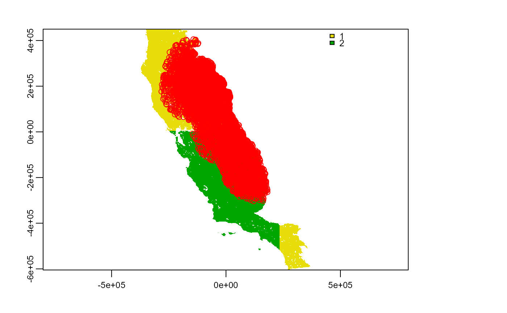# Sample thickening background within a calibration area and constrained to a region bg <- sample_background( data = spp_p, x = "x", y = "y", n = 3000, method = "thickening", rlayer = grid_env, maskval = 2, calibarea = ca_ps1 ) plot(grid_env)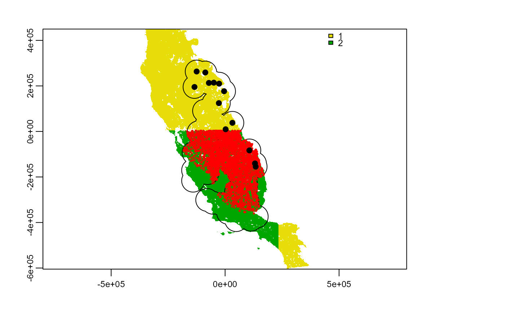## %######################################################%## # # #### Biased background method #### # # ## %######################################################%## require(dplyr) require(terra) data(spp) # Lets select the presences of a species spp_p <- spp %>% dplyr::filter(species == "sp1", pr_ab == 1) # Raster layer with density of poinst to obtain a biased sampling background occ_density <- system.file("external/occ_density.tif", package = "flexsdm") occ_density <- terra::rast(occ_density) plot(occ_density)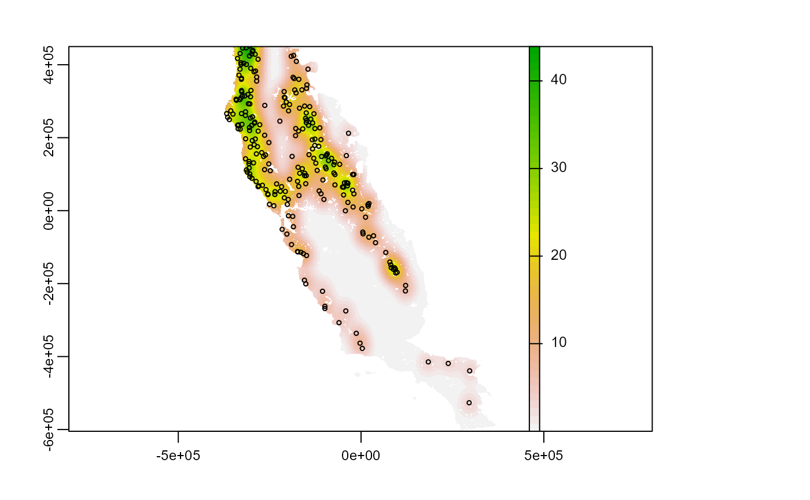# A layer with region used to contraint background regions <- system.file("external/regions.tif", package = "flexsdm") regions <- terra::rast(regions) plot(regions)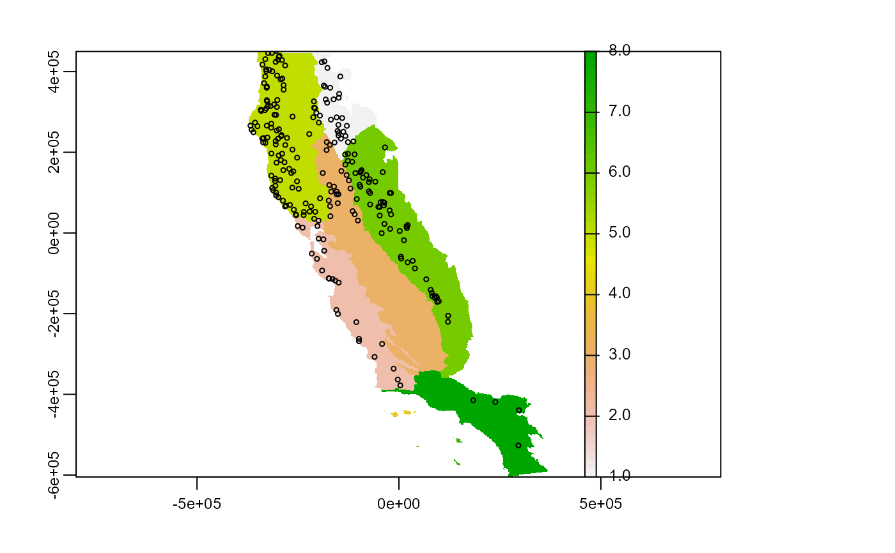# Biased background points spp_p # presences database of a species#> # A tibble: 250 x 4 #> species x y pr_ab #> <chr> <dbl> <dbl> <dbl> #> 1 sp1 -269871. 69512. 1 #> 2 sp1 -149991. 267962. 1 #> 3 sp1 -126231. 196142. 1 #> 4 sp1 91659. -156748. 1 #> 5 sp1 -210471. 326282. 1 #> 6 sp1 -140541. 284972. 1 #> 7 sp1 -217491. 65732. 1 #> 8 sp1 -201831. 17132. 1 #> 9 sp1 -40101. 150782. 1 #> 10 sp1 -178611. 225032. 1 #> # ... with 240 more rowsbg <- sample_background( data = spp_p, x = "x", y = "y", n = 3000, method = "biased", rlayer = regions, rbias = occ_density ) plot(occ_density)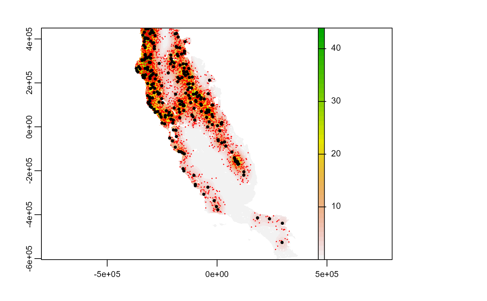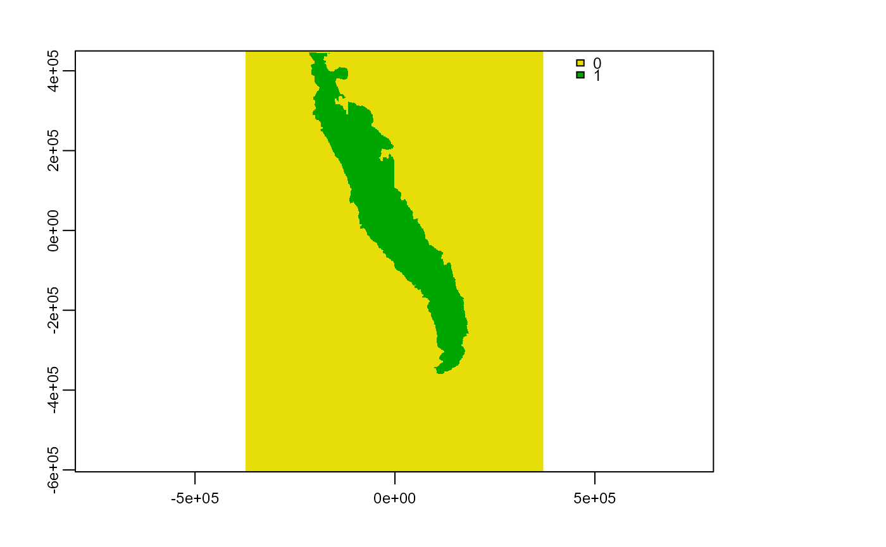bg <- sample_background( data = spp_p, x = "x", y = "y", n = 500, method = "biased", rlayer = regions, rbias = occ_density, maskval = c(1, 2) ) plot(occ_density)# }